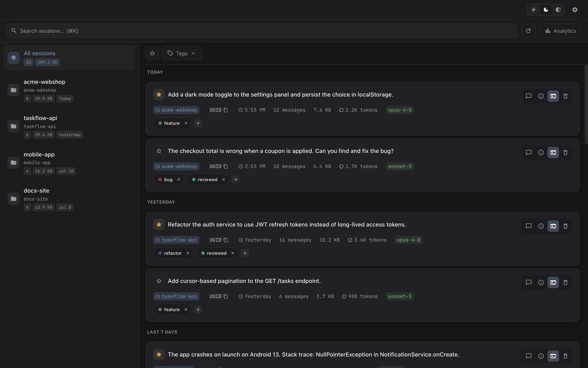
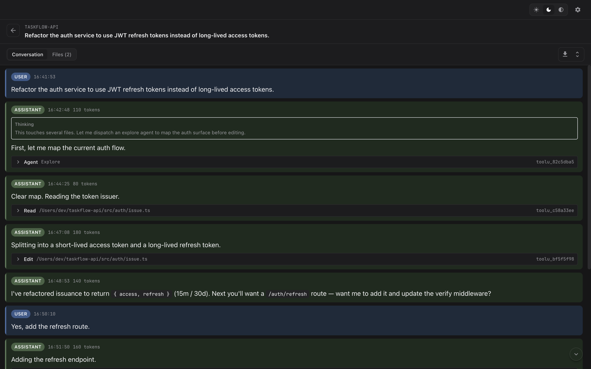
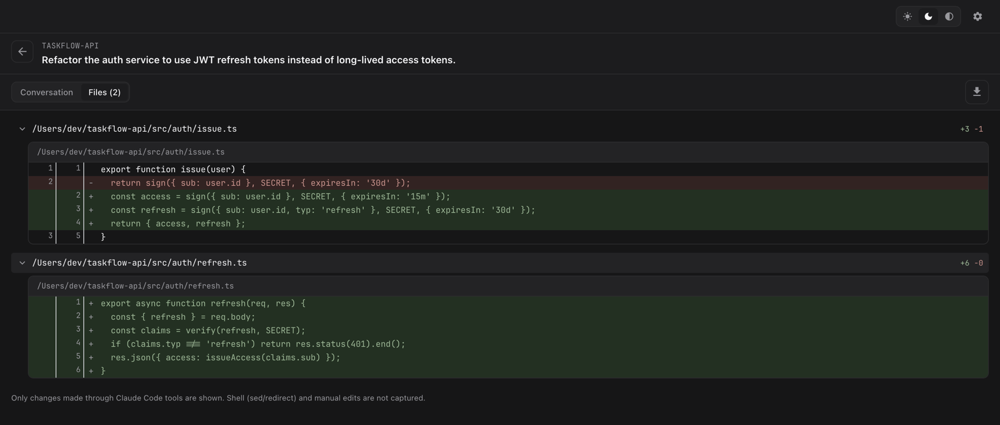
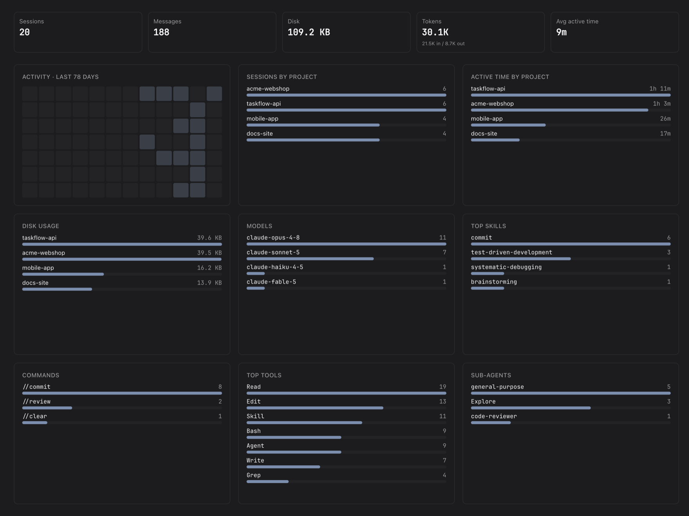

Your terminal forgets every Claude Code session. Sessary doesn't.
The desktop app shows your sessions — but if you run Claude Code in the terminal, they just pile up as JSONL logs you'll never open again. Sessary reads those logs and turns them into a fast, searchable library: full conversations, tool calls, diffs, and usage analytics. All on your Mac.




Everything from your Claude Code logs, made legible.
Claude Code stores every session as JSONL on disk. Sessary reads those files and gives them an interface — no matter how you run it.
Browse & search
Every session across every project in one list. Full-text search, filter by project, and star or tag the ones worth keeping.
Full conversation viewer
Thinking blocks, tool calls, code diffs, and sub-agent sidechains — rendered the way you'd actually read code.
Usage analytics
Sessions, messages, tokens, active time, models, skills, and per-project breakdowns. See where your Claude Code time goes.
Changed files
See exactly which files a session touched, with before/after diffs reconstructed straight from the log.
Resume in terminal
Pick up any past session in your terminal of choice — the resume command is one click away.
Export & clean up
Save a conversation as self-contained HTML, or delete old sessions to reclaim disk — safely.
Your session content never leaves your Mac.
Sessary reads your session files locally and renders them locally. No account, no cloud sync, no upload. Your prompts, code, and file paths stay on your machine — the only network calls are an optional update check and opt-out anonymous usage stats.
Download, drag, open.
Grab the .dmg, drag Sessary into Applications. The build is currently unsigned, so on first launch macOS may flag it — clear the quarantine flag once and you're set.